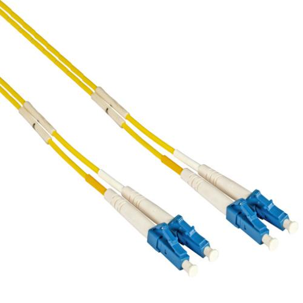
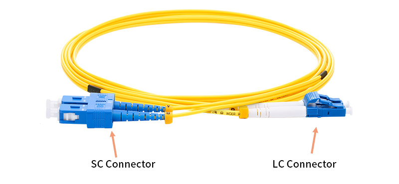

Glasvezelkabel (fiber) is een transmissiemedium dat data verstuurt via licht in plaats van elektrische signalen. Hierdoor biedt glasvezel enkele belangrijke voordelen tegenover koperen kabels:
Glasvezel kan datasnelheden aan van 10 Gbps tot meer dan 100 Gbps
Glasvezel heeft veel minder signaalverlies dan koper. Afstanden tot tientallen kilometers zijn mogelijk zonder actieve versterking.
Omdat er geen stroom door de vezel gaat, is glasvezel volledig ongevoelig voor elektromagnetische interferentie. Dit is ideaal in industriële omgevingen.
Als je een glasvezelkabel wil kopen dan zijn er drie zaken waar je voornamelijk moet op letten:
Singlemode of Multimode
LC of SC worden vaak gebruikt bij moderne netwerken
OS1, OS2, OM1, OM2, OM3, OM4
Singlemode glasvezel wordt voornamelijk gebruikt voor lange afstanden en hoge snelheden, zoals in telecommunicatie, datacenters of voor de verbinding tussen meerdere industriële sites. Multimode glasvezel is vooral geschikt voor kortere afstanden, bijvoorbeeld binnen lokale netwerken (LAN), kantooromgevingen of industriële installaties en datacenters waar de afstanden beperkt zijn.
Het verschil tussen singlemode en multimode glasvezel zit vooral in de manier waarop het licht zich door de vezel voortplant. Bij singlemode glasvezel gebruikt men een laser als lichtbron. Deze zendt één smalle, rechte lichtstraal uit (één modus), die zonder reflecties door de dunne kern van de vezel loopt. Omdat het licht een rechte baan volgt, ontstaan er nauwelijks vervormingen of vertragingen, wat singlemode geschikt maakt voor lange afstanden, tot tientallen kilometers.
Bij multimode glasvezel daarentegen wordt bij de oudere types OM1 en OM2 een LED gebruikt als lichtbron, en vanaf OM3 een VCSEL. Deze zendt meerdere lichtstralen tegelijk uit, die zich langs verschillende paden (modi) door de vezel bewegen. Door de reflecties binnen de dikkere kern ontstaan er kleine verschillen in aankomsttijd van de lichtstralen, waardoor de maximale afstand beperkter is.
Hoewel LED-lichtbronnen in glasvezelinstallaties misschien onschuldig lijken, is het niet veilig om in een glasvezel te kijken, zelfs niet als er een LED in plaats van een laser wordt gebruikt. De reden is dat veel van het licht dat door glasvezels wordt gestuurd, zich in het infrarode spectrum bevindt. Dit licht is onzichtbaar voor het menselijk oog, maar kan wel schade aanrichten aan het netvlies.
Het tweede waar je op moet letten is het type connector dat gebruikt wordt. In de praktijk worden heel vaak LC en SC connectoren gebruikt.
De LC connector (Lucent Connector) is klein, wat hem ideaal maakt voor toepassingen waar veel aansluitingen dicht bij elkaar moeten worden geplaatst, zoals in datacenters of patchpanelen.
De SC connector (Subscriber Connector) is groter en steviger, en klikt vast met een soort schuifmechanisme. Deze connector wordt vaak toegepast in omgevingen waar robuustheid belangrijk is, zoals bij industriële installaties.

Als laatste is er het type waar je op moet letten. Glasvezelkabels worden namelijk onderverdeeld in OM- en OS-types. De OM-types (Optical Multimode) zoals OM1, OM2, OM3, OM4 en OM5 verschillen in vezelkwaliteit, snelheid en maximale afstand. OM1 is de oudste en traagste, terwijl OM3 en OM4 geschikt zijn voor hogere snelheden zoals 10 of 40 Gbit/s over kortere afstanden.
Voor singlemode vezels zijn er OS1 en OS2. OS1 is bedoeld voor binnengebruik (bijvoorbeeld in buizen), terwijl OS2 beter geschikt is voor buitengebruik en lange afstanden dankzij lagere demping. In het algemeen geldt: hoe hoger het nummer, hoe moderner en beter de prestaties.